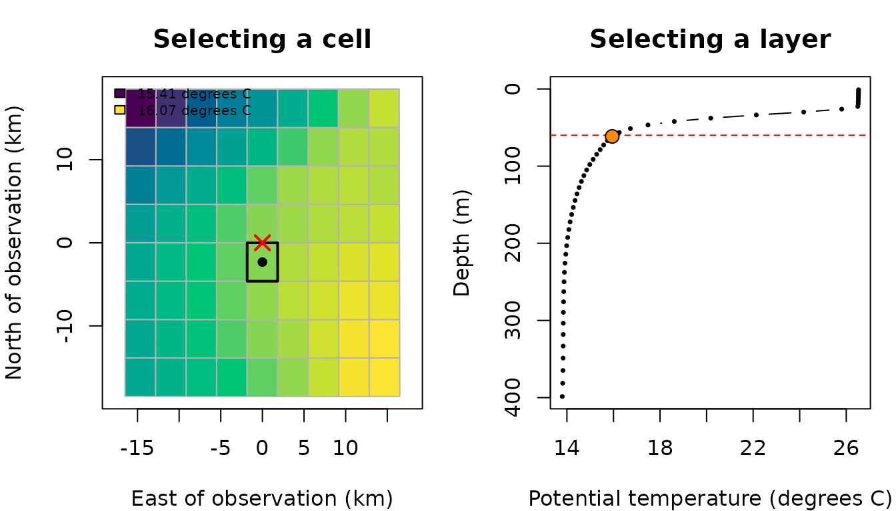

Extracting environmental data at observation points
Source:vignettes/articles/extracting-environmental-data-at-points.Rmd
extracting-environmental-data-at-points.RmdMarine observations often come with a geographical location, a depth and a date. These may describe an animal location recorded by a tracking device, an observation from a baited remote underwater video system (BRUV), a fishing operation or another type of marine survey. In each case, we may know where and when an observation was recorded but still need to identify its associated environmental conditions.
An environmental dataset rarely contains a measurement at precisely the same coordinates, depth and instant. Instead, it provides values on a grid, at particular depth levels and timestamps. Before assigning a temperature to an observation, we therefore need to decide which of these values represents the observation’s conditions.
What environmental conditions correspond to each fishing observation, and how do our selection rules affect the answer?
In this tutorial, we will use extract_to_point() to
answer this question. We will follow one observation through the
horizontal, vertical and temporal selections, then extend the workflow
to several observations and netCDF files.
Our research question
Imagine we have a small table of fishing records. For each record, we know:
- Its longitude and latitude, in decimal degrees.
- Its recorded depth, in metres below the reference surface.
- Its date and time, with a known time zone.
We would like to add potential temperature at the nearest valid depth, compare this with surface and deeper conditions, and understand where the returned values came from.
The fishing records below are fictional teaching observations. The temperatures are real modelled values from a small Copernicus Marine subset. No external downloads or credentials are needed to run this article.
A point selection describes the recorded location, rather than the full extent of a longline or the path of a trawl. If our question concerns conditions throughout a surrounding volume and time window, the buffer extraction tutorial provides a complementary workflow.
Getting started: preparing our data
The example files accompany this article in the repository’s
vignettes/articles/point-data/ directory. To run the code
manually, use vignettes/articles/ as your working
directory, as when building the article.
library(ocean3d)
# Locate the small real-data subset supplied with this article.
example_dir <- "point-data"
nc_file <- file.path(example_dir, "temperature-points.nc")
# Load the article's display data and plotting helper.
example <- readRDS(file.path(example_dir, "point-display.rds"))
source(file.path(example_dir, "figures.R"))The plotting helper is specific to this article; it is not an
exported ocean3d function. All environmental extractions
below use the netCDF files directly.
We begin by creating our observation table. Depths are positive downwards. We use UTC explicitly, preserving the instants recorded in the date column.
observations <- data.frame(
record = c("set_A", "set_B", "set_C"),
lon = c(0, 0.08, -0.08),
lat = c(38, 38.04, 38.06),
depth = c(60, 100, 200),
date = as.POSIXct(
c("2026-09-20 00:00:00", "2026-09-20 00:00:00", "2026-09-21 00:00:00"),
tz = "UTC"
)
)
observations
#> record lon lat depth date
#> 1 set_A 0.00 38.00 60 2026-09-20
#> 2 set_B 0.08 38.04 100 2026-09-20
#> 3 set_C -0.08 38.06 200 2026-09-21Our example file contains thetao, potential temperature
at 50 depth levels, and bottomT, the source product’s
temperature-at-the-seafloor variable without a vertical dimension. Both
vary with time. An additional artificial cell_id variable
is included only to demonstrate static extraction; it is not an
environmental measurement.
Step 1: Following one observation into the environmental grid
Let’s focus first on set_A: longitude 0 degrees,
latitude 38 degrees, depth 60 m, at midnight UTC on 20 September
2026.
one <- observations[1, ]Its coordinates identify a point. The environmental values, however, are stored at cell centres and discrete depth levels.
plot_point_context(example)
Figure 1. Following our observation into the dataset. Left: the red cross marks the requested point, the black dot marks the selected cell centre, and the outline identifies the cell containing the observation. Colours show temperature at the layer nearest 60 m on 20 September. Right: the vertical profile at that selected cell and timestamp. The red line marks 60 m and the orange point identifies the nearest valid layer. Lines join the profile points for visual guidance; extraction does not interpolate between them. Coordinates are local distances around 0 degrees E, 38 degrees N.
Step 2: Extracting our first temperature
We can request the valid depth layer closest to our observation with
method = "nearest".
nearest <- extract_to_point(
data = one,
nc = nc_file,
var = "thetao",
method = "nearest",
output_col = "temperature",
id_col = "record"
)
nearest
#> record lon lat depth date temperature
#> 1 set_A 0 38 60 2026-09-20 15.9467The original row is retained and a new column contains its selected
temperature. output_col lets us choose that column’s name;
id_col is checked to exist, so a misspelt identifier column
is caught early.
Here, “nearest” refers to depth. Time has its own
rule, time_match, and each observation takes the grid cell
that contains it.
Step 3: Understanding the horizontal selection
An observation takes the grid cell that contains it. It does not need
to coincide with the cell’s centre: in Figure 1, the requested point and
the selected centre are a short distance apart, which is a normal
selection. set_A lies exactly on the edge between two
cells, at 38 degrees N, so it takes the cell south of the edge, as any
point on an edge between two cells takes the cell east or south of
it.
The supplied subset is intentionally small. A point just outside its
coverage gets NA, even when it is close to a cell in the
subset:
outside <- one
outside$lon <- example$locations$lon[2]
extract_to_point(outside, nc_file, var = "thetao", method = "nearest")
#> record lon lat depth date thetao
#> 1 set_A 0.2175002 38 60 2026-09-20 NAextract_to_point() doesn’t search for a nearby cell. For
a point just outside the grid or in a cell without data, such as near
the coast, decide on its location first, or summarise the values around
it with the buffer
extraction tutorial.
Step 4: Choosing a depth selection
Different research questions call for different parts of the water
column. You choose the depth level with method:
method |
Selection |
|---|---|
"nearest" |
Layer with a value closest to the requested depth; at a tie, the shallower layer. |
"surface" |
Physically shallowest layer, even if its value is missing. |
"bottom" |
Deepest layer with a value in that cell’s profile. |
"2d" (default) |
Variable without a depth dimension, or with one depth layer. |
Let’s obtain our nearest, surface and bottom temperatures.
depth_methods <- c(nearest = "nearest", surface = "surface",
deepest_valid = "bottom")
sapply(depth_methods, function(m) {
extract_to_point(one, nc_file, var = "thetao", method = m)$thetao
})
#> nearest surface deepest_valid
#> 15.94670 26.52825 13.79936Surface and bottom selection do not require an observation depth
column. They are defined by the physical depth coordinates and valid
values in the profile, rather than the order in which layers were
stored. When var is left out and detected, the columns are
named nearest_<var>, surface_<var>
and seabottom_<var>. Despite its name,
seabottom_<var> is the deepest layer with a value,
which may be above the real seabed.
Nearest selection is not interpolation, and it does not impose a maximum vertical distance. A request beyond the available depth range can return a distant valid layer; decide whether that selection is appropriate for the analysis.
Our subset retains all 50 original depth levels, down to
approximately 398.54 m. The deepest valid thetao value is
therefore the deepest value available in that profile, not necessarily a
measurement at the seabed.
4.1. Reading a variable without a depth dimension
The source also provides bottomT, a separate
temperature-at-the-seafloor variable. We use method = "2d",
the default, because that variable has no vertical axis. It still has a
time axis and therefore still requires a date.
deepest_valid <- extract_to_point(one, nc_file, var = "thetao",
method = "bottom")$thetao
provider_bottom <- extract_to_point(
data = one,
nc = nc_file,
var = "bottomT",
output_col = "provider_bottom_temperature"
)
data.frame(
deepest_valid_thetao = deepest_valid,
provider_bottom_temperature = provider_bottom$provider_bottom_temperature
)
#> deepest_valid_thetao provider_bottom_temperature
#> 1 13.79936 13.20377These columns need not be equal: one selects a layer from the
supplied thetao profile; the other reads the provider’s
separate bottomT variable.
Step 5: Matching observations to timestamps
Our first observation coincided with a dataset timestamp. In practice, observations often fall between records. Let’s move it to midday.
midday <- one
midday$date <- as.POSIXct("2026-09-20 12:00:00", tz = "UTC")
extract_to_point(midday, nc_file, var = "thetao", method = "nearest",
time_match = "nearest")
#> record lon lat depth date thetao
#> 1 set_A 0 38 60 2026-09-20 12:00:00 15.9467With time_match = "nearest" (the default), each
observation takes the closest time step; with "exact", it
needs a step at the same time. A date-time such as this one is compared
as an instant, and a Date by its UTC day. The nearest rule
sets no maximum time gap on its own.
5.1. Limiting the accepted time gap
max_time_diff is in days, even for
date-times. For example, 0.1 days is 2.4 hours, so neither neighbouring
midnight satisfies this limit for our midday observation.
extract_to_point(midday, nc_file, var = "thetao", method = "nearest",
max_time_diff = 0.1)
#> record lon lat depth date thetao
#> 1 set_A 0 38 60 2026-09-20 12:00:00 NAThe result is NA. To require a step on the same UTC day
instead of the same instant, give the date without the hour and match
exactly:
same_day <- midday
same_day$date <- as.Date("2026-09-20")
extract_to_point(same_day, nc_file, var = "thetao", method = "nearest",
time_match = "exact")
#> record lon lat depth date thetao
#> 1 set_A 0 38 60 2026-09-20 15.9467This reads a record labelled on that day; it does not calculate a daily average.
5.2. Preserving hours and time zones
A Date or date-only ISO string compares by UTC day. A
POSIXct/POSIXlt object or ISO date-time keeps
the hour and compares the instant. This follows the observation’s
precision, not the file’s sampling frequency.
Let’s represent the original midnight UTC observation in Madrid time.
local_time <- one
local_time$date <- as.POSIXct("2026-09-20 02:00:00", tz = "Europe/Madrid")
utc_result <- extract_to_point(one, nc_file, var = "thetao",
method = "nearest", time_match = "exact")
local_result <- extract_to_point(local_time, nc_file, var = "thetao",
method = "nearest", time_match = "exact")
data.frame(utc = utc_result$thetao, madrid = local_result$thetao)
#> utc madrid
#> 1 15.9467 15.9467These represent the same instant and return the same value. Calendar days are compared in UTC, so a local date can correspond to the previous UTC day.
For text, use unambiguous ISO dates such as
"2026-09-20", or date-times such as
"2026-09-20T00:00:00Z". Date-time text is read as UTC, with
or without the Z, so text recorded in local time gives the
wrong instant. Numeric offsets and zone names in text are not accepted;
construct a POSIXct object with the intended zone instead.
Resolve ambiguous daylight-saving times when creating that object.
unspecified_zone <- one
unspecified_zone$date <- "2026-09-20 00:00:00"
# Read as midnight UTC.
extract_to_point(unspecified_zone, nc_file, var = "thetao", method = "nearest")
#> record lon lat depth date thetao
#> 1 set_A 0 38 60 2026-09-20 00:00:00 15.9467Step 6: Extending the workflow to tables, variables and files
We can now apply the same rules to every observation in our table.
environment <- extract_to_point(
data = observations,
nc = nc_file,
var = "thetao",
method = "nearest",
output_col = "temperature",
id_col = "record"
)
environment
#> record lon lat depth date temperature
#> 1 set_A 0.00 38.00 60 2026-09-20 15.94670
#> 2 set_B 0.08 38.04 100 2026-09-20 15.01775
#> 3 set_C -0.08 38.06 200 2026-09-21 13.88106Rows and their order are retained. extract_to_point()
reads each time step once for all the observations at that time, so a
large table needs few reads. var takes one variable, so to
add another, call again with the previous result as the input table.
environment <- extract_to_point(
data = environment,
nc = nc_file,
var = "bottomT",
output_col = "bottom_temperature"
)
environment[, c("record", "temperature", "bottom_temperature")]
#> record temperature bottom_temperature
#> 1 set_A 15.94670 13.20377
#> 2 set_B 15.01775 13.19387
#> 3 set_C 13.88106 13.61041Choose distinct output names for different quantities: a column that
already exists is an error rather than being overwritten.
output_col is the preferred naming option and overrides the
older output_prefix.
6.1. A static variable does not need a date
The cell_id layer is an artificial static identifier
included for this teaching example. It has no time or depth dimension,
even though the same file also contains temporal, three-dimensional
temperatures.
locations <- observations[, c("record", "lon", "lat")]
extract_to_point(locations, nc_file, var = "cell_id", output_col = "grid_cell")
#> record lon lat grid_cell
#> 1 set_A 0.00 38.00 32
#> 2 set_B 0.08 38.04 43
#> 3 set_C -0.08 38.06 48The need for a date follows the selected variable, not the presence of a time dimension elsewhere in the file.
6.2. A series of files, one per date
The example also includes two files containing only
thetao, one for 19 September and another for 21 September,
on the same grid. Several files of one variable on one grid are read as
a series: their time steps are put in time order and joined, so the
order we list them in doesn’t matter.
files <- file.path(example_dir, c(
"temperature-2026-09-19.nc",
"temperature-2026-09-21.nc"
))
later <- observations[3, ]
first_order <- extract_to_point(later, files, var = "thetao",
method = "nearest", output_col = "temperature")
reverse_order <- extract_to_point(later, rev(files), var = "thetao",
method = "nearest",
output_col = "temperature")
data.frame(first_order = first_order$temperature,
reverse_order = reverse_order$temperature)
#> first_order reverse_order
#> 1 13.88106 13.88106Both return the 21 September value. Files on different grids, such as
spatial tiles, are not one series: call extract_to_point()
once per grid.
These daily files each contain a single data variable, so automatic
variable detection is possible when var is omitted. The
main example file contains several variables and needs an explicit
choice.
extract_to_point(later, files, method = "nearest", output_col = "temperature")
#> record lon lat depth date temperature
#> 3 set_C -0.08 38.06 200 2026-09-21 13.88106Step 7: Distinguishing missing observations from invalid requests
An explicit missing date is different from a missing column or an
invalid date string. Let’s keep both a valid row and a row whose date is
NA.
with_missing <- observations[1:2, ]
with_missing$date[2] <- NA
extract_to_point(with_missing, nc_file, var = "thetao", method = "nearest",
id_col = "record")
#> Warning: 1 of 2 points has no time, but variable `thetao` has 3 time steps, so
#> their values are NA. Give the points a time in as_vector3d().
#> record lon lat depth date thetao
#> 1 set_A 0.00 38.00 60 2026-09-20 15.9467
#> 2 set_B 0.08 38.04 100 <NA> NABoth rows remain in the output, but the second temperature is
NA, with a warning that says how many observations had no
time. A static-variable extraction can still succeed for that same row.
Similarly, a missing requested depth leaves the nearest-depth value
missing, while surface and bottom values, which need no depth, are still
available.
missing_depth <- one
missing_depth$depth <- NA_real_
sapply(c(nearest = "nearest", surface = "surface", bottom = "bottom"),
function(m) {
extract_to_point(missing_depth, nc_file, var = "thetao",
method = m)$thetao
})
#> nearest surface bottom
#> NA 26.52825 13.79936If the date column is absent for a temporal variable, the request is invalid:
without_date <- one[, setdiff(names(one), "date")]
extract_to_point(without_date, nc_file, var = "thetao", method = "nearest")
#> Error:
#> ! `data` has no column date.A date written in an ambiguous format is invalid as well:
invalid_date <- one
invalid_date$date <- "20/09/2026"
extract_to_point(invalid_date, nc_file, var = "thetao", method = "nearest")
#> Error:
#> ! Time values could not be converted. Invalid date/time.
#> Input: column `date`
#> Affected observations: 1.
#> row/position 1: "20/09/2026"
#> Use Date, POSIXct/POSIXlt, YYYY-MM-DD, YYYY-MM-DD HH:MM or YYYY-MM-DD HH:MM:SS.
#> Text timestamps are interpreted in UTC. For another time zone, supply a POSIXct/POSIXlt object.The message names the affected input and original value, and lists
the accepted formats. A date that was NA to begin with is
not an error.
These errors are intentionally printed in this tutorial. They show requests that need correction, rather than conditions to solve by silently widening the time tolerance.
For other datasets, also inspect the coordinate metadata. Depths
stored in supported metre, centimetre or kilometre units are converted
to physical metres, with their positive direction taken into account.
Pressure, sigma and formula-based vertical coordinates need an explicit
conversion rather than being treated as metre depths. Nonstandard time
calendars likewise need compatible handling; see as_proxy()
for supported cases.
Step 8 (extra): Adapting the input to our own workflow
8.1. Custom observation-column names
custom <- one
names(custom) <- c("operation", "longitude", "latitude", "fishing_depth", "when")
extract_to_point(
custom, nc_file, var = "thetao", method = "nearest",
lon_col = "longitude", lat_col = "latitude", depth_col = "fishing_depth",
date_col = "when", id_col = "operation", output_col = "temperature"
)
#> operation longitude latitude fishing_depth when temperature
#> 1 set_A 0 38 60 2026-09-20 15.9467For nonstandard netCDF dimension names, lon_dim,
lat_dim, depth_dim and time_dim
provide explicit overrides. These refer to file dimensions, whereas the
*_col arguments refer to observation columns.
8.2. Direct coordinates and scalar recycling
extract_to_point() can also receive coordinate vectors
without an observation table, and returns one value per point. A scalar
depth or date is recycled across points.
extract_to_point(
nc = nc_file, var = "thetao", method = "nearest",
lon = c(0, 0.08), lat = c(38, 38.04), depth = 60,
date = as.POSIXct("2026-09-20", tz = "UTC")
)
#> [1] 15.94670 15.982648.3. Spatial objects
An sf input retains its POINT geometry:
spatial_observations <- sf::st_as_sf(observations, coords = c("lon", "lat"), crs = 4326)
extract_to_point(spatial_observations, nc_file, var = "thetao", method = "nearest")
#> Simple feature collection with 3 features and 4 fields
#> Geometry type: POINT
#> Dimension: XY
#> Bounding box: xmin: -0.08 ymin: 38 xmax: 0.08 ymax: 38.06
#> Geodetic CRS: WGS 84
#> record depth date geometry thetao
#> 1 set_A 60 2026-09-20 POINT (0 38) 15.94670
#> 2 set_B 100 2026-09-20 POINT (0.08 38.04) 15.01775
#> 3 set_C 200 2026-09-21 POINT (-0.08 38.06) 13.88106Data frames, matrices with column names and named lists are also supported. If using a matrix, remember that combining different types can convert columns to text; longitude and latitude must remain numeric at extraction.
8.4. A connection owned by the caller
An already opened ncdf4 connection remains usable after
extraction. The caller is responsible for closing it.
local({
connection <- ncdf4::nc_open(nc_file)
on.exit(ncdf4::nc_close(connection))
result <- extract_to_point(one, connection, var = "thetao", method = "nearest")
print(ncdf4::ncatt_get(connection, "thetao", "units"))
result
})
#> $hasatt
#> [1] TRUE
#>
#> $value
#> [1] "degrees_C"
#> record lon lat depth date thetao
#> 1 set_A 0 38 60 2026-09-20 15.9467Summary
We have assigned environmental values to fishing observations and traced how each request selects a cell, depth layer and timestamp. Along the way, we have:
- Used
extract_to_point()with each of its four depth methods. - Seen that an observation takes the cell that contains it, and gets
NAoff the grid. - Compared nearest, surface and bottom layers without interpolation.
- Preserved observation hours and time zones, and applied explicit temporal limits.
- Read a series of files, named outputs and distinguished missing values from invalid inputs.
The complete basic workflow remains short:
result <- extract_to_point(
data = observations,
nc = nc_file,
var = "thetao",
method = "nearest",
time_match = "nearest",
max_time_diff = 1,
output_col = "temperature",
id_col = "record"
)The one-day time limit is an example choice, not a universal recommendation. Choose settings that match the meaning and precision of your observations.
extract_to_point() is a short wrapper over the package’s
build and intersect steps: as_vector3d() builds the points,
as_proxy() describes the file and extract()
reads the value at every point. The workflow article
shows those steps directly, and how to summarise values in buffers,
areas and along tracks.
Next steps
- See
extract_to_point()for supported inputs and detailed selection rules. - Explore the buffer tutorial when the question concerns a surrounding space and time window.
- Return to Getting started with ocean3d to explore species’ three-dimensional distributions.
Data sources and reproducibility
The temperature subset comes from Mediterranean Sea Physics
Reanalysis, product MEDSEA_MULTIYEAR_PHY_006_004,
dataset cmems_mod_med_phy-temp_my_4.2km_P1D-m_202511,
downloaded on 19 October 2026. The original temperature values and all
50 downloaded depth levels are retained, with a small spatial crop and
three selected dates. The two daily files contain subsets of those same
original values. The fishing records and static cell_id
field are explicitly artificial teaching data.
E.U. Copernicus Marine Service Information; https://doi.org/10.48670/mds-00375. Source temperatures remain subject to the Copernicus Marine Service licence. The tutorial does not imply endorsement by Copernicus Marine or CMCC.
The repository’s data-raw/point-article.R
recreates the files and Figure 1’s display data.
All arguments and defaults
Expand or collapse the complete extract_to_point() signature
This signature is generated from the current function. Arguments without a default require input. A vector lists alternatives with the default first; choose one alternative when calling the function.
extract_to_point(
# Data and sources
data = NULL, nc, var = NULL,
# Direct observation coordinates
lon = NULL, lat = NULL, depth = NULL, date = NULL,
# Depth selection
method = c("2d", "surface", "bottom", "nearest"),
# Observation and output columns
lon_col = "lon", lat_col = "lat", depth_col = "depth", date_col = "date",
output_col = NULL, output_prefix = NULL, id_col = NULL,
# Source dimensions
lon_dim = NULL, lat_dim = NULL, depth_dim = NULL, time_dim = NULL,
# Temporal selection
time_match = c("nearest", "exact"), max_time_diff = NULL
)| Decision | Choices, meaning and effective default |
|---|---|
| Input and variable |
data = NULL uses direct lon/lat/depth/date
inputs; supply a table, matrix, named list or sf points instead. Dates
are required only for variables with several time steps. nc
is a file path, several paths of a series on one grid, or an open
connection; var = NULL detects a single data variable. |
method |
"2d" (default) for a variable without
depth or with one depth layer; "nearest" takes the layer
with a value closest to the requested depth; "surface"
takes the physically shallowest layer; "bottom" takes the
deepest layer with a value. |
| Horizontal cell | Each observation takes the cell that contains it; an
observation off the grid gets NA. |
time_match |
"nearest" (default) chooses the nearest
time step; "exact" requires a step at the same instant
(date-time) or on the same UTC day (date).
max_time_diff = NULL has no time-distance limit; a
nonnegative value limits it in days. |
| Missing dates | A static variable needs no date. A temporal variable
requires the date input or column. An explicit NA keeps the
row and returns a missing value, with a warning. |
| Input names |
lon_col, lat_col,
depth_col, date_col default to lon, lat,
depth, date. id_col = NULL means no identifier column; a
given one is checked to exist. Dimension names default to NULL (detect);
set lon_dim, lat_dim, depth_dim or time_dim to override. |
| Output name |
output_col = NULL uses the variable name,
or nearest_, surface_ or
seabottom_ with it when var is detected;
output_prefix is the older name for the same choice. A
column that already exists is an error. |
See extract_to_point()
for accepted formats, units and the full output description.